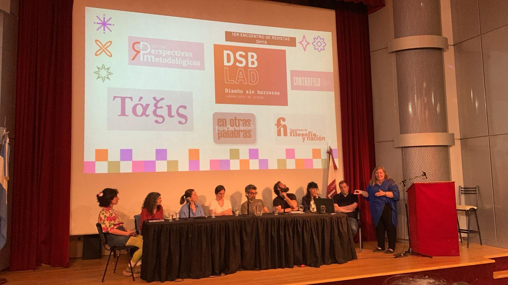

22 de abril de 2025
“Mary Robinson: Liderando el cambio en clave feminista” Embajada de la República de Irlanda
Inauguramos con este encuentro la temporada 2025 de eventos de nuestra carrera. Esta jornada tan especial contó con la presencia de la cónsul de la Embajada de la República de Irlanda, Ms. Sarah Maguire, quien fue recibida por el director del Departamento de Humanidades y Artes, Dr. Aritz Recalde, y por la directora del Traductorado Público en Idioma Inglés, Trad. Públ. Andrea Crespo.
Una vez más, la docente de nuestra carrera, Mgter. Mónica Cuello, organizó este evento en el que se proyectó el documental sobre la figura de Mary Robinson, la primera mujer en ocupar la presidencia de la República de Irlanda, cargo que desempeñó entre 1990 y 1997. Acompañaron a la Mg. Cuello, la Trad. Públ. Verónica Repetti, directora de la carrera de Traductorado Público en Inglés de la Universidad del Salvador, y la Lic. en Artes por la UBA, María Andrea Piazza, quien también posee una Diplomatura en Estudios Irlandeses y es especialista en cine.
El documental Mary Robinson: Climate Justice ofrece un retrato profundo y conmovedor de una mujer lúcida y comprometida con la construcción de un mundo más justo y equitativo. A través de entrevistas e imágenes de archivo, pudimos conocer su personalidad arrolladora y su convicción inquebrantable por impulsar transformaciones sociales mediante una militancia incansable, desde un feminismo activo y empático. Su voz firme ha sido clave en la defensa de diversas causas, como los derechos humanos, la protección del medio ambiente y las condiciones de vida de los sectores más vulnerables.
En la actualidad, Mary Robinson continúa su labor humanitaria como integrante de The Elders, un grupo independiente de líderes globales fundado en 2007 por Nelson Mandela, dedicado a promover la paz, los derechos humanos y la justicia en todo el mundo.
Este evento despertó un gran interés entre todos los asistentes, quienes encontramos en su semblanza una inspiración profunda. Celebrar la figura de Mary Robinson es homenajear su incansable compromiso como mujer, abogada, activista, feminista y defensora de los derechos humanos, como así también la valentía y convicción con la que recorrió y aún recorre su vida. Es un referente ético que nos inspira y alienta a reconocer que nuestras propias acciones, por más pequeñas que parezcan, pueden generar cambios en busca de un mundo más justo, humano y sostenible.
25 de abril de 2025
Traducir culturas o el desafío de confluir desde la diversidad – Dra. Laura Bertone
La Dra. Laura Bertone, prestigiosa lingüista e intérprete internacional, visitó la UNLa y compartió una jornada memorable con una audiencia variada y entusiasta. Su presencia atrajo especialmente a estudiantes del curso de Interpretación, quienes al finalizar su disertación, formularon preguntas pertinentes sobre diversos aspectos de su trayectoria profesional.
Laura no solo habló de su experiencia como intérprete, sino que dio información sobre aspectos que trascienden la interpretación per se, se adentró en el estudio riguroso de las operaciones cognitivas que ocurren en todo el proceso interpretativo, algo que habla de ‘desarmar’ el trabajo del intérprete y detectar niveles más profundos (fonológicos, semánticos, psicológicos, entre otros).
La visita de la Dra. Bertone dejó una impresión profundamente positiva en todos los asistentes. Su afabilidad y buena disposición generaron un ambiente cálido y cercano, propicio para el intercambio académico. Con gran generosidad, compartió detalles significativos de su trayectoria profesional, brindando a los estudiantes una visión enriquecedora del campo de la interpretación. Además, respondió con claridad, respeto y atención a cada una de las preguntas planteadas, demostrando no solo su vasto conocimiento, sino también su compromiso con la formación de las nuevas generaciones de intérpretes.
11 de septiembre de 2025
English after RP – Dr. Geoff Lindsey
Geoff Lindsey es doctor en fonética y lingüista británico, conocido mundialmente por ser uno de los mayores referentes en fonética del inglés. Es autor del libro “English after RP: standard English pronunciation today” (2019), que describe las formas en que el inglés británico estándar actual difiere del acento de clase alta del siglo pasado, conocido como “Received Pronunciation”, que en la actualidad se considera anticuado e incluso arrogante y ridículo.
Ante un Aula Magna con capacidad completa, Geoff disertó sobre los cambios y actualizaciones fonéticas más relevantes que se identifican en el actual inglés estándar británico que él denomina “Standard Southern British” (SSB). Según él, esta nueva pronunciación del inglés se ha tornado dominante, e incluso ilustró como las nuevas generaciones de la realeza inglesa (William y Harry) ya lo han adoptado definitivamente. Algunas de las características del SSB que Lindsey destacó fueron cambios en el sonido de vocales, uso más frecuente del glottal stop, la reintroducción de la intrusive r, entre otros.
La disertación del Dr. Geoff resultó especialmente interesante porque acercó una mirada actualizada y realista sobre la pronunciación del inglés británico, al demostrar cómo los idiomas evolucionan y se adaptan a los nuevos tiempos.
30 de septiembre de 2025
Proyección de la película «From that small island» (Desde esa pequeña isla). La historia de un pequeño país y su extraordinaria diáspora
Este evento contó con el apoyo de la Embajada de la República de Irlanda; la UNLa; la AEIS (Asociación de Estudios Irlandeses del Sur); la Universidad del Salvador (USAL) ̶ Cátedra Extracurricular de Estudios Irlandeses ̶ ; la Cátedra Libre de Estudios irlandeses de la Diáspora Irlandesa “Edna O-Brien-Colum McCann”; la Mgter. María Graciela Eliggi, y la Facultad de Ciencias Humanas, Universidad Nacional de La Pampa (UNLPam), quienes realizaron el subtitulado de la película.
Tuvimos el honor de contar en el Aula Magna del Bicentenario con la presencia, entre las diversas autoridades presentes, de la asesora histórica del film, Jane Ohlmeyer, quien contó aspectos históricos de la película y comentó sobre la dificultad de seleccionar, entre tantos siglos de historia, el material necesario para ofrecer un panorama lo más completo posible del recorrido de esta nación desde sus primeros habitantes prehistóricos hasta la actualidad.
From that small island es una bellísima película que reconstruye la historia de Irlanda desde sus orígenes hasta la vasta diáspora mundial que hoy afirma una identidad irlandesa extendida por el mundo. La diáspora en Argentina fue analizada por Juan José Delaney, profesor de Literatura en la USAL, quien también aparece en el film, y destaca, entre otros comentarios, la figura del Almirante Guillermo Brown, irlandés naturalizado argentino, primer Almirante de nuestra fuerza naval, quien consagró su vida al servicio de su patria adoptiva.
2 de octubre de 2025
Traducción jurídica y lengua inglesa: asimetrías léxicas
Nuevamente esta dupla virtuosa de docentes del Traductorado Público UNLa, la Trad. Públ. Nadia Couselo y la Trad. Públ. y Magíster en Traducción, Mariela Santoro, profesoras de Lengua Inglesa I, II y III y Traducción Legal I y II respectivamente, presentaron una ponencia sumamente interesante y utilísima para traductores ̶ graduados o en formación ̶ sobre Asimetrías Léxicas, es decir, los desequilibrios o desajustes entre palabras y expresiones de dos lenguas que impiden establecer una correspondencia directa o exacta entre ellas. Luego de que cada una expusiera las particularidades de palabras o expresiones puntuales en sus respectivos contextos (lingüístico y jurídico), las conclusiones de esta presentación se tornaron consejos: No pensar que el título es habilitante de por sí, capacitarse permanentemente, jerarquizar las fuentes de consultas, olvidarse de que el diccionario es siempre confiable a la hora de traducir y desarrollar el pensamiento crítico por sobre todas las cosas.

3 de octubre de 2025
“Paul Muldoon, a life in lyrics”
Este evento fue parte del Programa de Estudios Irlandeses de la Embajada de la República de Irlanda llevado a cabo por el Traductorado Público (UNLa). El filme (2022) dirigido por el aclamado director irlandés de cine y teatro, Alan Gilsenan se proyectó en el Auditorio del Aula Magna de nuestra universidad, lo que realmente fue un lujo en todo sentido. En primer lugar porque estuvieron presentes el poeta Muldoon, para contarnos cuestiones de su vida y de su arte, y el director Gilsenan, que reveló anécdotas de filmación y otros detalles cinematográficos del filme. La directora de la carrera, Andrea Crespo, realizó el subtitulado de toda la película, una tarea compleja, ya que el inglés del filme a veces se mezclaba con el irlandés gaélico. La interpretación consecutiva estuvo a cargo de nuestra estudiante Sabrina Díaz Testa, quien se lució por la precisión y la gran frescura con la que abordó la traducción. En segundo lugar, porque fue un honor interactuar con ambos, ya que estuvieron distendidos y dispuestos a responder con amabilidad y cercanía las preguntas del público. Entre los asistentes se encontraba Pablo Ingberg, traductor al español de parte de la obra poética de Muldoon: otro lujo que enriqueció la jornada. Por último, queremos destacar la participación activa de la audiencia, y, como siempre, la organización excelente del personal no docente y la labor técnica del personal de la UNLa, cuya dedicación garantiza que el Aula Magna siga siendo el espacio ideal para este tipo de encuentros, donde la calidad sonora y de imagen son indispensables.
Este documental, que recorre la vida, obra y trayectoria artística de Muldoon, no se centra exclusivamente en su biografía tradicional. Combina poesía recitada, canciones, interpretaciones musicales, lecturas y testimonios de los artistas que colaboraron (Paul Simon, Paul McCartney, su hijo, Paul Muldoon, Bono, Liam Neeson, entre muchos otros). Es un homenaje al poeta, a su voz, a su manera de ver el mundo. Una experiencia sensorial que nos regaló un momento verdaderamente inolvidable.
10 de octubre de 2025
Octava jornada interuniversitaria de traducción e interpretación
Bajo el lema «Derribar mitos y construir futuro», esta nueva jornada, única en su tipo, reúne y vincula a estudiantes de todas las universidades del país y de Uruguay que dictan la carrera de Traductorado Público en idioma inglés, para participar de este singular evento en el cual son los protagonistas absolutos en calidad de oradores.
Este año, la sede fue la Universidad de Belgrano en C.A.B.A.
Como todos los años desde la creación de esta Jornada, la UNLa estuvo muy bien representada por la estudiante Ailén Candia, quien disertó sobre «They en textos jurídicos y traducción no sexista», moderada por Julieta Pollina, y las estudiantes Lucero López Etcheverry y Ivana Hansen Carnevali, que presentaron su ponencia «Matrimonio igualitario en Estados Unidos y Argentina: análisis y traducción», moderadas por Julián del Russo.
23 de octubre de 2025
Encuentro de revistas del Departamento de Humanidades y Artes

Dentro del marco de la Semana de las Artes, organizada por el Depto. de Humanidades y Artes, y con la coordinación de Estefanía Fondevila Sancet, responsable del área de Investigación de ese espacio académico, se presentaron las revistas que reflejan el pensamiento y la expresión de sus respectivas áreas de especialización. Estas son:
- Perspectivas Metodológicas, revista científica de acceso abierto, de periodicidad anual y publicación continua, vinculada a las carreras de Especialización y Maestría en Metodología de la Investigación Científica de la Universidad Nacional de Lanús.
- Cuestiones de Filosofía y Nación, revista de divulgación promovida por los Centros de Filosofía, Ética y Cultura (CEFEC) y de Investigaciones Históricas del Depto. de Humanidades y Artes de la UNLa.
- Contrafilo, revista de divulgación científica de la Especialización en Pensamiento Nacional y Latinoamericano del siglo XX, perteneciente al Departamento de Humanidades y Artes de la Universidad Nacional de Lanús (UNLa).
- Diseño sin Barreras (DSB LAD), revista académica de divulgación del Laboratorio de Diseño (LAD), que tiene por objetivo difundir y transferir no solo los resultados de la investigación en diseño, sino todos los trabajos de asignatura, tesis de grado y posgrado, entrevistas relevantes, así como la promoción y desarrollo de todos los sectores que afectan al diseño, incluidos el industrial, producto, gráfico, estratégico, metodológico, ambiental, de espacios y de servicios.
- Τάξις (Táxis), revista del Doctorado del Departamento de Filosofía del Depto de HH.AA., cuyo objetivo es proporcionar un lugar para trabajos de actualidad filosófica, debates, posiciones críticas, interpretaciones textuales y relecturas, orientadas a problemáticas éticas.
- En otras palabras/In other words, nuestra querida revista, es una publicación anual sobre temas relativos a la traducción, la traductología, y la cultura en general, que se propone resumir la variadísima actividad del Traductorado Público durante el año académico, entre otras cosas.
2.° cuatrimestre 2025
Primer Seminario de Extensión: “Introducción a los Estudios Irlandeses” en la UNLa
El Seminario de Extensión: “Introducción a los Estudios Irlandeses” se dictó durante el segundo cuatrimestre de este ciclo lectivo. Este seminario de carácter híbrido es fruto del trabajo que el Traductorado Público en Idioma Inglés viene desarrollando junto a la Embajada de Irlanda desde 2023. El curso se enmarca en el Programa de Estudios Irlandeses, al cual postulamos y en el que nuestra propuesta fue aceptada.
Los docentes Mónica Cuello y Diego Domínguez estuvieron a cargo del dictado del seminario. En este contexto, buscaron despertar la curiosidad de los estudiantes por diversos aspectos de este país tan distante en términos geográficos, pero tan cercano si se considera la gran cantidad de inmigrantes irlandeses que se establecieron en nuestro país, allá por el siglo XIX, cuando las dificultades económicas, políticas y sociales que atravesaba Irlanda llevaron a millones de personas a emigrar en busca de una vida mejor.
Desde entonces, los inmigrantes irlandeses se han integrado a nuestro país enriqueciendo nuestra diversidad cultural con su música, danza y literatura. Nos han cautivado sus fiestas tradicionales y las fascinantes leyendas, transmitidas de generación en generación, que forman parte del folclore irlandés.
Este seminario introductorio se adentró en la historia irlandesa a fin de conocer sus pormenores: sus raíces celtas, la lengua gaélica, sus creencias religiosas, la huella indeleble del paso de estos pueblos nómadas por las tierras irlandesas y, por supuesto, la invasión y posterior colonización anglonormanda. Para ello, indagó sobre diferentes disciplinas transversales —como la historia y los mitos y leyendas — con el fin de ofrecer un panorama amplio y completo sobre este pueblo europeo.
Con una inscripción inicial de noventa y cuatro estudiantes de todo el país y de Chile, el seminario se desarrolló de manera híbrida con visitas especiales de disertantes invitados. En cada una de las tres unidades que componen el programa se contó con un invitado especial. Para la Unidad 1, “Irlanda y su Historia”, se ofreció una disertación a cargo de la Dra. María Eugenia Cruset, sobre “Oliver Cromwell: del fanatismo religioso a la conveniencia política, o por qué los irlandeses maldicen su nombre”. La Unidad 2, “Irlanda y sus Raíces Celtas” incluyó una clase abierta de música celta brindada por el grupo Primavera Celta, integrado por Pablo Ibarbangoittia, Ariel Aguer Weber, Luciano Silva Castillo y Nicolás Sokolic. La última unidad, “La Gran Hambruna”, presentó “Memoriales de la Gran Hambruna Irlandesa” cargo de la Lic. Viviana Keegan. Como cierre de este seminario se proyectó la película From That Small Island (2025).
El seminario también contó con una presencia muy especial: el escritor y poeta Paul Muldoon, recientemente nombrado profesor emérito de Humanidades Howard G.B.Clark por la Universidad de Princeton. Este prestigioso autor fue recibido por el cónsul irlandés John Byrne—en su primera visita a la UNLa—y por autoridades de la universidad: la vicerrectora, Georgina Hernández, el decano del Departamento de Humanidades y Artes, Aritz Recalde, y la directora del Traductorado Público, Andrea Crespo. También se contó con la presencia de Veronica Repetti, presidenta de AEIS (Asociación de Estudios Irlandeses del Sur), y la Mgter. María Graciela Eliggi, directora de la Cátedra Libre de Estudios Irlandeses y de la Diáspora Irlandesa “Edna O´Brien-Colum McCann”, Facultad de Ciencias Humanas, Universidad Nacional de La Pampa.
Muldoon es considerado una de las voces poéticas más influyentes de nuestro tiempo. Con más de tres décadas de docencia en Princeton y una trayectoria internacional marcada por premios como el Pulitzer y el T.S. Eliot. Su labor como poeta, traductor, editor y docente se distingue por la innovación formal, la riqueza de referencias culturales y una particular generosidad al compartir su obra, siempre concebida como un espacio de encuentro colectivo.
Su visita a esta institución tuvo como objetivo presentar la película biográfica A Life in Lyrics o Una vida en Canciones, dirigida por Alan Gilsenan, escritor, cineasta y director de teatro irlandés galardonado.
Esta visita y el seminario mostraron el gran interés que despiertan los Estudios Irlandeses en muchas personas, no necesariamente por una cuestión de raíces familiares sino también por afinidad con este país.
Y para culminar, es importante decir que se ha presentado una nueva propuesta a la Embajada de Irlanda para ofrecer un segundo curso sobre Estudios Irlandeses en 2026. En cuanto haya noticias, se comunicarán a la comunidad.
Finalmente, los docentes agradecen a todos quienes colaboraron de una u otra manera para que este seminario fuera posible, así como a los estudiantes que participaron con sus enriquecedores aportes, su excelente predisposición y la generosidad con la que compartieron sus increíbles historias (muchos de ellos, descendientes de irlandeses), acompañando en este viaje cultural que ha dejado una huella en la memoria de todos nosotros.
Sobre la autora

María Victoria Illas es Traductora Pública de Inglés egresada de la Universidad Católica Argentina. Docente en la UNLa de las materias Traducción Técnica II y III desde el año 2009 hasta el 2023. En la actualidad, ya retirada del aula, es tutora y correctora del Programa de Prácticas Preprofesionales y tutora/ evaluadora de trabajos finales y editora de la revista de la carrera “En otras palabras/In other words”. Traductora free-lance especializada en Medicina y Farmacología. Traductora y correctora de inglés de la Revista Argentina de Microbiología editada por la Asociación Argentina de Microbiología. Traductora y correctora de estilo de trabajos de investigación médicos. En continua capacitación académica. Amante de la literatura desde siempre y de tantas otras cosas, entre ellas, su profesión, la danza, el arte, la música, los viajes, los libros, el cine y el teatro.